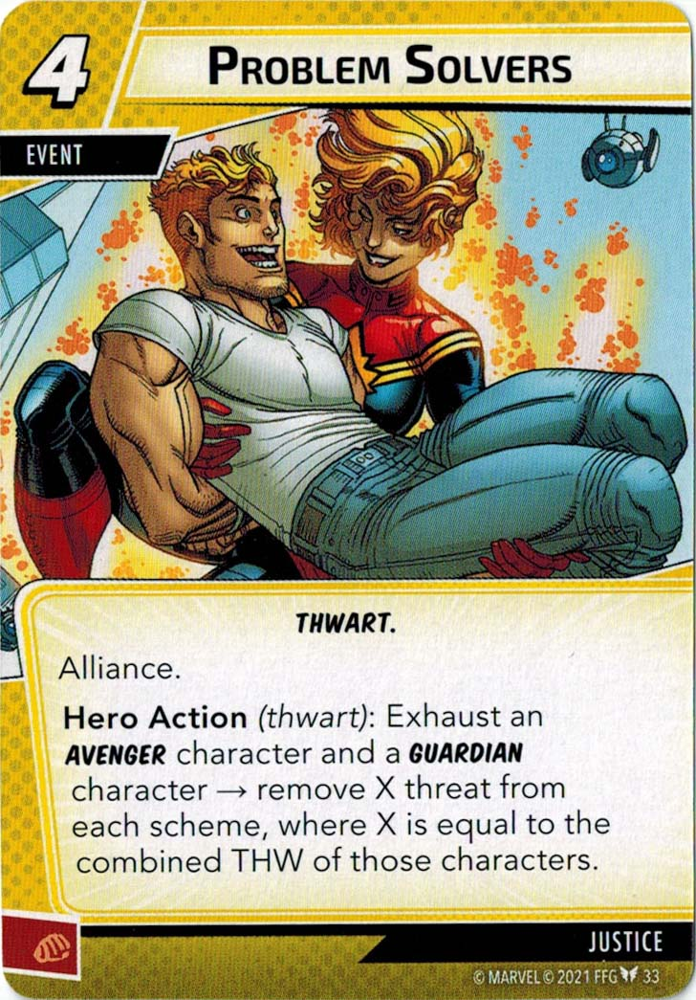
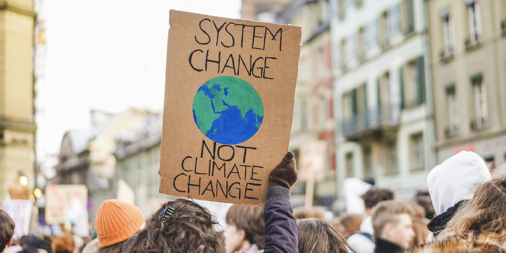

I. The Basics of Problem-Solving in a Community
Justin Leinaweaver (Spring 2025)
Getting Involved in our Community
Find or create an opportunity to get actively involved in your issue locally (e.g. litter pickup, river cleanup, working with a local NGO or city agency on your issue, etc.)
Write a report describing what you did, who you worked with and what you learned that will help you with solving your chosen policy problem.
1) The Basics of Problem-Solving in a Community
“Politics”
“Environment”
“Policy”
How does thinking about “politics” help us solve problems?

How does thinking about the “environment” help us solve problems?

What baseline arguments do problem-solvers make BEFORE designing a solution?
1) The Basics of Problem-Solving in a Community
“Politics”
“Environment”
“Policy”
What are three key elements you argue are necessary to successfully navigate a domestic policy-making process?
Hughes (2007)
Kraft (2011)
Clarke and Peterson (2016)
What are three key elements you argue are necessary to successfully navigate a domestic policy-making process?
DOC’S KEY approach (Hughes 2007, ch4)
The Policy Process Model (Kraft 2011, ch3)
The Collaborative Approach to Environmental Conflict (Clarke and Peterson 2016, ch1 and 2)
?
?
…
Describe the problem facing our community
Investigate the relevant stakeholders
Frame the problem
Consider policy designs…
Describe the problem facing our community
Investigate the relevant stakeholders
Frame the problem
Consider policy designs…
If this is our process, where can regular people get involved in problem-solving?
Describe the problem facing our community
Investigate the relevant stakeholders
Frame the problem
Consider policy designs…
Is this process better at addressing some kinds of problems than others?
Describe the problem facing our community
Investigate the relevant stakeholders
Frame the problem
Consider policy designs…
Does this process sufficiently incentivize small steps forward?
Miller (2009) ch3 on CAFE standards
Grandoni, Siddiqui & Phillips (2021) on recent Biden Admin actions